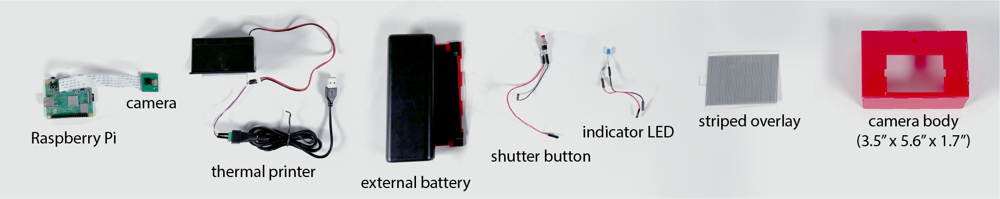
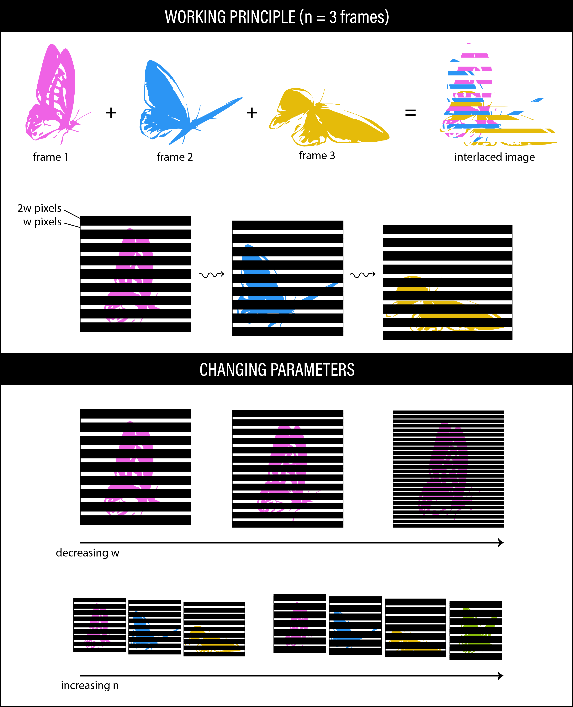
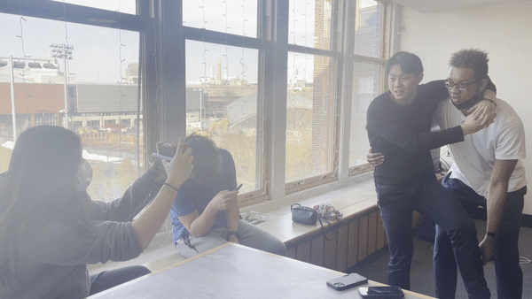
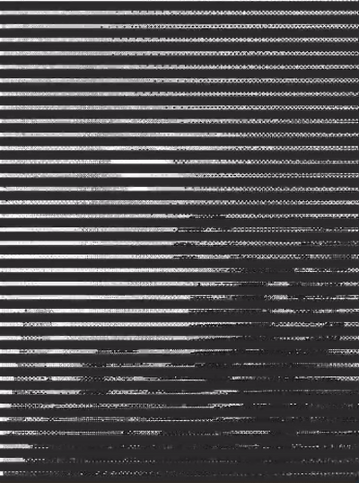
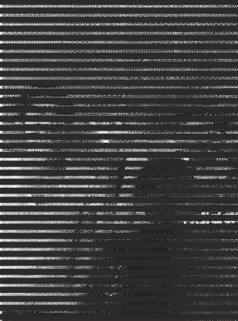

Publication
Ticha Sethapakdi, Mackenzie Leake, Catalina Monsalve Rodriguez, Miranda J. Cai, Stefanie Mueller.
KineCAM: An Instant Camera for Animated Photographs
[To appear] In Proceedings of SIGGRAPH'22 Art Papers.
Video
SIGGRAPH Talk Video
KineCAM: An Instant Camera for Animated Photographs


The kinegram is a classic animation technique that involves sliding a striped overlay across an interlaced image to create the effect of frame-by-frame motion. While there are known tools for generating kinegrams from pre-existing videos and images, there exists no system for capturing and fabricating kinegrams in situ. To bridge this gap, we created KineCAM, an open source instant camera that captures and prints animated photographs in the form of kinegrams. KineCAM combines the form factor of instant cameras with the expressiveness of animated photographs to explore and extend creative applications for instant photography.
INTRODUCTION
Digital photography has experienced a surge in popularity, and advancements in camera technology have spurred exponential growth in the number of photos captured. Digital photographs are easy to manipulate, reproduce, and share---features that are valued in our increasingly connected world. While digital and smartphone cameras have become increasingly powerful photography tools, instant cameras, such as Polaroids, have kept their nostalgic appeal. Although instant cameras are more limited in their use and image quality than digital cameras, surprisingly there is growing interest in instant photography as new-old cameras enter the market.
Photographs are typically considered to be static, but new forms of photography have challenged this convention to produce imagery that is more dynamic: blurring the lines between photos, videos, and animations. Whereas moving photographs were once somewhat niche, major smartphone manufacturers such as Apple and Google have devised ways to integrate them into their products.
Although the aforementioned examples focus on digital moving photographs, there are a number of alternative animation techniques which precede the digital age. The kinegram (also known as barrier-grid animations or scanimations) is one such animation technique that was developed prior to the 1900's. They have appeared in books, cards, and even tattoos. While kinegrams may not offer the high resolution and frame rate of their digital successors, they come with unique affordances. Unlike (digital) moving photographs, which viewers passively experience through a screen, kinegrams require viewers to physically engage with the printed image in order to "activate" the motion. Interacting with the image in this way gives the user control over the speed and direction of motion, lending to a more intimate and hands-on experience that is absent from standard digital pictures.
While there are tools that allow users to create kinegrams from pre-existing videos or images, they are typically made post hoc, i.e., there is a delay between capturing the motion, processing the image, and printing the output. Researchers have explored making digital kinegrams from live videos, though they do not provide a method for fabricating them on-the-spot.
KineCAM bridges this gap by merging live capture and fabrication into a single, portable device.
KINECAM DESIGN
KineCAM is a custom-built camera device (Fig. 2) with kinegram processing software written in Python. It retains many of the key qualities of instant photos and moving photos but differs in several ways. Similar to instant cameras, KineCAM offers a fast and portable way to create physical photos. Rather than capturing static images, however, KineCAM is able to capture dynamic movements, which expands the artistic potential for instant photography. Unlike the "black box" of a Polaroid camera, KineCAM also provides access to the internal hardware and software systems, which enables users to customize their cameras and produce a wider range of visual outputs.

Figure 2. The core components of KineCAM are the Raspberry Pi 3+, Arducam 5MP Camera, and a small thermal receipt printer. These are off-the-shelf components that can be acquired through most electronics retailers and together cost less than $100.
Components and workflow
KineCAM's workflow uses a three-tiered approach that encompasses capture, processing, and fabrication. When the photographer presses the shutter button, the indicator LED lights up for 1 second to show that KineCAM is capturing a video and turns off when it is finished. After extracting frames from the video and processing them into a kinegram, the Raspberry Pi prints the output on the thermal printer. The striped overlays are printed separately on transparency film using a regular inkjet printer.
Software implementation
To create the kinegram, our system records the video for a fixed unit of time and selects \(n\) frames from it. It then decomposes the frames into strips of width \(w\) pixels, interlaces them, and composites them into a single image. For an \(n\)-frame kinegram, its striped overlay comprises alternating transparent stripes of width \(w\) and opaque stripes of width \((n-1)w\). Constructing the overlay in this way ensures that only one frame is visible at a time (Fig. 3a).

Figure 3. A system diagram showing a) the working principle for KineCAM and b) the effect of changing certain parameters.
Figure 3. A system diagram showing a) the working principle for KineCAM and b) the effect of changing certain parameters.
In our examples, we set the default video capture length to 1 second (32 frames total), create strips that are 3 pixels wide, and select frames near the beginning (frame 9), middle (frame 19), and end (frame 29). We picked these values because they produced subjectively good results for our purposes, but these parameters can be adjusted.
RESULTS AND DISCUSSION
We used KineCAM to create a portrait series that captures an afternoon social gathering (Fig. 4). Subjects were invited to have their picture taken while we observed how they interacted with the camera. Our experiences from this activity enabled us to see how KineCAM creates opportunities for experimental, low-stakes, social photography.

Figure 4. Selected scans of the portrait series made with KineCAM.
Encouraging experimentation
KineCAM is an unconventional photographic device that piques curiosity and encourages experimentation. Although it looks like an unassuming instant camera on the surface, KineCAM produces photos that are not typical of instant cameras. This subversion of expectations drew subjects to KineCAM and encouraged them to experiment with the outputs. In our photo sessions, subjects tested the expressiveness of KineCAM by performing actions ranging from subtle hand gestures to large full body movements.
Functioning as a social tool
Polaroids have been considered to be fun and playful tools, heavily marketed as devices to be passed around at parties and social gatherings. Peggy Sealfon notes in The Magic of Instant Photography that the presence of the camera encourages people to behave differently. She states that the camera can be a "helpful ice-breaker" and "will motivate people to do unexpected things, just to see the immediate record of their behavior". In KineCAM we notice similar behavior: subjects spontaneously gesture or move with the intention of seeing how their motions will be captured. In our photo shoots, people would call their friends over to do motions together or assist them with more ambitious poses, such as leaping into each other’s arms (Fig. 5) or slapping each other’s faces (Fig. 6). As none of the subjects knew what to expect from KineCAM, it offered an experience wherein subjects could discover and learn the camera’s behaviors and affordances together. Even the act of waiting for the image to process and print had a social component to it: people huddled around KineCAM in anticipation as the printer created the kinegram and excitedly exchanged remarks when they saw desirable or surprising outputs.
 
Figure 5. KineCAM spurred playful interactions between participants. In this example, we used KineCAM to capture a participant jumping into his friend's arms. Creating unique physical artifacts and surprises
Polaroid historian Peter Buse noted that the output image itself becomes a wonderful gift or even incentive for a person to appear in the photograph. This is also true for the images produced by KineCAM, which were often described as "cool" by subjects and motivated them to have their picture taken just to see the results. Buse has also argued that one of the most relevant features of Polaroid photography to consider in today’s digital world is the uniqueness of the output, as the lack of a digital negative makes it harder to reproduce these images mechanically. KineCAM preserves and extends this quality: the image is not stored in memory so it is not easily reproduced. The viewing of the image is also an experience that varies each time as the viewer moves the filter across the image. And while users may scan and reprint the kinegram later on, there can only be one true "receipt" of their experience. Although these outputs could be videotaped and uploaded to social media sharing sites, the full experience of moving the filter across the image is lost.

Figure 6. KineCAM captures a participant slapping his friend's face.
Figure 6. KineCAM captures a participant slapping his friend's face.
DIY culture
KineCAM has been influenced by maker culture and the DIY movement by taking inspiration from a highly commercial product and making tools for creating this device from scratch with highly customizable features. This allows users to tailor the camera’s specifications to the way that they operate it. Some attributes, such as video capture length and number of frames, are easy to adjust through setting parameters in the KineCAM source code. Changing parameters affects how the kinegram is processed, yet there sometimes remains an element of surprise in how a particular gesture is recorded. Making the captured frames closer together, for instance, would intuitively work well for recording fast gestures—however, how well this gesture is represented depends on the combination of the selected representative keyframes and the subject’s motion. To capture gestures in a more controlled way, users would have to experiment with adjusting the subject’s motion to fit the code or adjusting the code to fit the motion.
Future work
In our photo sessions, we primarily focused on the experience of using and interacting with KineCAM in a social context. However, we believe that KineCAM has the potential to be more broadly applied to other situations that can benefit from on-the-go fabrication of kinegrams. One practical application for KineCAM could be to use it as a tool for rotoscoping in traditional animation. Although the image-manipulation techniques that KineCAM utilizes are relatively simple, such methods are highly relevant to a wide range of applications in computer graphics, such as video compression. As with many new artistic tools, we envision that KineCAM will be used in clever and creative ways that we cannot currently imagine. We believe that the hackability of KineCAM will not only offer new artistic opportunities for experimental photography, but also give makers the chance to more freely explore the use cases and limitations of the kinegram medium.
CONCLUSION
While there is tremendous value in approaching technology with a forward-looking perspective, it can also be inspirational to look back and revisit technologies with a sense of nostalgia. By drawing inspiration from the instant cameras of decades past and the longstanding fascination with adding motion to photos, KineCAM creates new photography experiences that encourage play and experimentation. We hope that open-sourcing KineCAM can enable future artists, makers, and engineers to reappropriate KineCAM for other use cases and contexts that make it greater than the sum of its parts.
ACKNOWLEDGMENTS
We thank Jasmin Bouzarouata, Thanh Nguyen, and Jahrid Clyne for all their help.